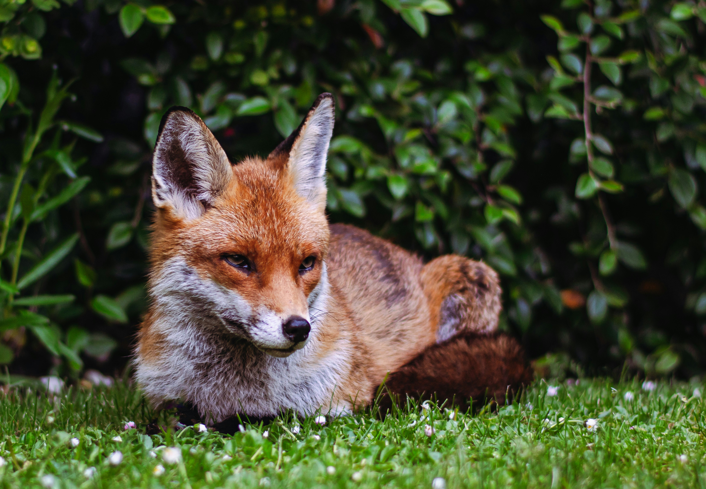

The red fox, which is a cousin to the dog, is common across Minnesota. A careful eye may even spot one in the Twin Cities and surrounding suburbs.
Vulpes vulpes is medium-sized predator with an average adult size of 15 to 16 inches tall of the shoulder. They typically weigh between 8 and 15 pounds. Their area has several color variations, but it is well known for its rusty coat and white-tipped bushy tail. Its legs, ears, and nose are usually black.

Check out the Wikipedia page
For more information on the redfox